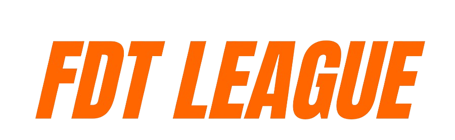

Este regulamento tem como objetivo garantir que o campeonato seja conduzido de forma justa, organizada e transparente, promovendo uma experiência divertida, competitiva e respeitosa para todos os participantes. Nosso compromisso é oferecer um ambiente onde a diversão e o espírito esportivo estejam sempre em primeiro lugar, incentivando o crescimento da comunidade, a evolução dos pilotos e o respeito mútuo dentro e fora das pistas.
1.1 - Todos os participantes e interessados em competir no campeonato devem ler com atenção este regulamento técnico e esportivo, considerando-se plenamente de acordo com seus termos a partir do momento em que decidem participar.
1.2 - A organização poderá atualizar este regulamento a qualquer momento durante a temporada. Qualquer alteração será comunicada com, no mínimo, 12 horas de antecedência nos canais oficiais.
1.3 - Caso o piloto não tenha confirmado sua inscrição e ainda assim deixe de comparecer às corridas, a organização se reserva o direito de removê-lo do campeonato a qualquer momento.
1.4 - O piloto tem a total liberdade de expressar suas opiniões e pensamentos, desde que, não ofenda a honra e a integridade dos demais participantes.
1.5 - É extremamente proibido enviar videos de incidentes, ofensas ou qualquer outro conteudo que possa vir a prejudicar o convívio entre os participantes.
1.6 - Em caso de desistência do piloto antes do inicio da edição em que ele se inscreveu, o reembolso será de 50% do valor da inscrição. Em caso de desistência do piloto durante a edição, não haverá, em hipótese nenhuma, devolução da taxa de inscrição
2.1 - O campeonato terá o formato de disputa somente de pilotos, sem disputa de construtores.
2.2 - Depois da 4 etapa, o campeonato será dividido em categorias. As categorias são:
Categoria Light: Para pilotos iniciantes, com foco em aprendizado e diversão.
Categoria Intermediário: Para pilotos com alguma experiência, buscando evolução e competitividade.
Categoria Elite: Para pilotos experientes, com foco em alta performance e competição intensa.
2.3 - Apesar da divisão do grid, as regras valerão igualmente para todos.
2.4 - As corridas acontecerão as 21h00 e o lobby começará a ser montado às 20h45.
2.5 - O campeonato contará com 8 etapas, podendo ser com duração de 50% e 100%, com desempenho realista.
2.6 - As corridas serão disputadas no jogo Formula 1 2025, com crossplay habilitado.
2.7 - As etapas serão no formato lastro invertido + grid invertido com desempenho realista, somente a primeira etapa terá o desempenho igual com qualy 12 minutos + sprint + qualy 18 minutos + corrida de 50%.
3.8 - A divisão das categorias será feita com base na performance dos pilotos nas 4 primeiras etapas.
O lobby será montado com as seguintes configurações:
3.1 - A volta de apresentação estará ligada.
3.2 - Clima Dinâmico - Aproximado.
3.3 - Corte de curvas rígido.
3.4 - Parque fechado.
3.5 - Fantasma desabilitado.
3.6 - Bandeira vermelha desabilitada.
3.7 - Modo difícil do combustível.
4.1 Todos os pilotos receberão pontos com base em suas posições finais em cada corrida, que não seja sprint, de acordo com a seguinte tabela:
4.2 - A volta rápida receberá 1 ponto extra, desde que o piloto complete a corrida.
4.3 - A participação na etapa receberá 2 pontos extra.
4.4 - Pilotos que perderem a conexão e não conseguirem retornar à prova ou por algum outro motivo não concluírem a corrida e o BOT concluir a corrida, receberá a pontuação da posição final do BOT, posição máxima considerada valida será a p11 ou seja, 10 pontos da etapa. ex: Se o Bot do piloto termina a provas em p7, será atribuído a pontuação de um p11. Se o Bot termina a corrida em p15, ser atribuída a pontuação de um p15.
4.5 - Na etapa que contenha a corrida Sprint, a pontuação seguirá a seguinte tabela:
Teremos 9 troféus em disputa que serão dividos do seguinte formato:
🏆 Categoria Light
Campeão e Vice-Campeão
🏆 Categoria Intermediário
Campeão e Vice-Campeão
🏆 Categoria Elite
Campeão e Vice-Campeão
🏆 Piloto Revelação do Campeonato
(Destinado ao piloto que prometeu nada e entregou muito)
🏆 Piloto FairPlay
(Destinado ao piloto limpo e sem punição)
🏆 Mito da Ultrapassagem
(Destinado ao piloto que mais vezes foi eleito piloto da corrida,
consequentemente o que mais fez ultrapassagens)
5.1 - Cada piloto arcará com o frente de envio dos troféus.
6.1 - O campeonato usará o sistema de punição de retirada de pontos do campeonato conforme a gravidade da infração comentida.
6.2 - Para determinar a gravidade da colisão serão analisados os seguintes critérios:
6.3 - As punições aplicadas aos pilotos são dividias em quatro categorias:
6.3 - As punições terão peso aumentado na primeira e última volta. Isso significa que a penalidade aplicada será elevada em um grau, em razão da criticidade desses momentos da prova.
6.4 - Nem todo acidente que gera dano será necessariamente definido um culpado. Existe a possibilidade de ser considerado lance de corrida.
6.5 - É expressamente proibido utilizar IA durante a corrida. Somente durante o SC, unico e exclusivamente, será permitido o uso e qualquer problema causado pela IA será de responsabilidade do piloto.
6.6 - Ao sair da pista o piloto deverá retornar com o maior cuidado possível visando a segurança da corrida dos demais pilotos. Não será permitido o uso para redefinir a pista. Passivel de punição.
6.7 - Ao rodar e ficar no meio da pista o piloto deve ficar PARADO até que esteja seguro retornar. Qualquer acidente que aconteça por conta do movimento ao tentar voltar o mesmo será penalizado.
6.8 - O piloto que estiver utilizando vantagem inadequeada, de qualquer origem, o mesmo será banido da liga.
6.9 - Todo piloto tem que OBRIGATORIAMENTE gravar a corrida. Se for solicitado alguma gravação e o piloto não tiver, o piloto será sofrerá punição média.
6.10 - Caso o piloto abandone a corrida de forma proposital na pista, punição leve. Caso o carro tenha danos no assoalho ou asa traseira na pista, poderá abandonar, mas somente nos boxes e com vídeo de comprovação dos danos. Se abandonar sem o vídeo de comprovação, punição Leve.
6.11 - Durante o safety car é expressamente proibido colocar o carro lado a lado. Os pilotos devem manter seus carros alinhados ao da frente. Passível de punição leve.
6.12 - É expressamente probido andar de forma lenta durante o Safety Car. Caso o delta esteja acima de 3 segundos o mesmo será advertido e caso tenha causado algum acidente será análisado. Ao ser advertido pela segunda vez será feito a retirada de 3 pontos do campeonato.
6.13 - Na relargada do Safety Car, o lider é o responsável por definir o ritmo respeitando a velocidade minima de 80km/h e onde fará a relargada. Qualquer atitude antidesportiva, como "break-test", será considerada uma infração Alta e caso tenha causado acidentes e danificado o carro de outros competidores será considerada uma infração Grave.
6.14 - Não e permitido nenhuma ultrapassagem em regime de safety car e bandeira AMARELA ou Virtual Safect car ao verificarmos que algum piloto levou vantagem o mesmo será punido
6.15 - O piloto que nas corridas com lastro escolher o carro errado na montagem do loby receberá apenas 1pt independe da posição que chegue ao final da corrida, caso o piloto não complete a corrida não receberá pontuação alguma.
6.16 - O Piloto que receber bandeira azul deverá facilitar a ultrapassagem do piloto que está dando a volta nele, FORA DO TRAÇADO, preferencialmente em uma reta. Se o piloto que receber bandeira azul estiver em disputa de posição com outro piloto, deverá ceder a ultrapassagem do piloto que está dando volta da mesma forma, abrindo mão temporariamente da sua disputa por posição para que não prejudique o piloto que está mais rápido e dando volta
6.17 - O piloto ao entrar no pitlane deve frear gradativamente. Qualquer acidente causado por freada brusca muito distante do limite de velocidade será aplicado uma punição Média. Freadas bruscas só são permitidas extremamente próximas do limite de velocidade.
6.18 - Quando estiver sendo ultrapassado em linha reta poderá mudar apenas uma vez de direção para se defender, sendo estritamente proibido mudar mais de uma vez de direção na mesma tentativa de defesa.
6.19 - O piloto em posição de ataque só terá o direito de espaço para dividir a curva somente se estiver parcialmente ao lado do piloto defensor antes da tangência da curva.
6.20 - É extremamente proibido frear o carro demasiadamente antes do normal ou mesmo parando o carro em locais impróprios e acarretando acidentes
6.21 - O piloto que mergulhar o carro nas curvas e ocasionar um acidente será penalizado pela comissão.
6.22 - Todos os pilotos devem estar com a telemetria em modo público. Os pilotos que não estiverem, sofrerão uma advertência e a partir da segunda vez será considerado punição Leve e progredirá conforme a quantidade de vezes que for feito o pedido podendo levar a expulsão do campeonato.
6.23 - Ao entrar no campeonato o piloto ACEITA QUE poderá utilizar fotos e vídeos com total liberdade dos mesmos. Em todas mídias sócias da pagina com whatsaap ,Site, discord e facebook e instagram E YOUTUBE SEM AVISO PREVIO.
6.24 - Caso o piloto cause algum acidente de forma proposital, seja batendo em muro, freando de forma brusca em locais inapropriados, batendo em outro piloto será aplicado uma punição grave.
6.25 - Os lobbys terão inicio de montagem 15 minutos antes do inicio da partida. O piloto deverá entrar antecipadamente para que não corra riscos e poderá pedir no máximo 5 minutos de tolerância, em relação ao horário programado, para o inicio da corrida.
6.26 - É obrigatório que todos pilotos façam a volta de apresentação, é proibido o uso da IA para fazer a volta completa e ganhar vantagem, utilização máxima por 10s, pós isso o piloto que for denunciado com análise perderá automaticamente punição leve.
6.27 - O piloto, durante a volta de apresentação, deve respeitar a ordem de largada, ou seja, não pode ultrapassar outro piloto. O piloto que por ventura ultrapassar na volta de apresentação ou tirar um piloto da mesma, sofrerá a perca de 1pt na tabela de pontuação.
7.1 - As reclamações referentes a incidentes de corrida, deverão ser enviadas para o responsável apresentado no inicio do campeonato, sendo o prazo máximo de envio do pedido será até as 24h do dia seguinte a corrida, a defesa terá o período de 24 horas após a solicitação do vídeo para enviar ao responsável. O mesmo irá enviar a solicitação para a comissão de análise de incidentes e aguardar o retorno.
7.2 - A solicitação de investigação de incidente deverá conter OBRIGATORIAMENTE:
(ID) do piloto solicitante
(ID) do piloto envolvido
Pista
Volta do incidente
Breve explicação do que aconteceu
7.3 - Só serão aceitas imagens gravadas pelo próprio piloto durante a corrida. NÃO SERÁ ACEITO PEDIDO DE ANÁLISE OU DEFESA SE NÃO FOR DA ONBOARD DO SOLICITANTE
7.4 - A comissão de análise pode utilizar imagens da transmissão se assim achar necessário ou pedir a gravação de outro piloto que considerem ter alguma visão que possa auxiliar na tomada de decisão.
7.5 - O vídeo de análise deve ser enviado com pelo menos 15s antes do incidente e 15s posterior ao acidente para melhor análise do impacto causado, sem cortes ou pausas.
7.6 - O piloto que não enviar o vídeo de defesa para a comissão de análise será penalizado com uma punição média acusante tenha informações que leve a crer que o acusado está errado na disputa, levará também a punição pelo acidente.
7.7 - Acidentes decorrentes de problemas de conexão dos pilotos (LAG) serão julgados da mesma forma que os demais. Todo piloto é responsável por correr com uma internet de qualidade
7.8 - Os pedidos de análise que não seguirem o modelo definido no ponto 7.2 serão desconsiderados IMEDIATAMENTE.
7.9 - Os pilotos não tem um limite de pedido de análise por temporada.
7.10 - O piloto que fizer um pedido de analise que foi considerado IMPRODUTIVO receberá uma advertencia e acumulando 3 advertencias receberá a retirada de -2 pontos do campeonato.
7.11 - A direção do campeonato mostrará o resultado da análise no grupo do WhatsApp destinado ao campeonato.
7.12 - Não é permitido em hipótese alguma, solicitação, reclamações, ofensas ou discussões em quaisquer grupos de WhatsApp, Discord, páginas e chats de transmissão de lives de redes sociais do campeonato, sendo inclusive, passível de punição se a organização descobrir.
7.13 - As análises dos acidentes serão análisadas por 3 comissários anônimos.
7.14 - O piloto que receber mensagens ofensivas no privado ou mensagens que contenham palavras de baixo calão podem solicitar análise. Deve ser enviado a solicitação no mesmo formato definido no ponto 7.2, porém no lugar do vídeo deve ser enviado os prints da conversa.
8.1 - Em caso de queda de conexão que seja superior a 50% da quantidade de pilotos que estão disputando a prova, e a prova estiver com menos de 60% concluída esta ficará anulada e será marcada uma nova data para realização da mesma, sendo esta definida pela diretoria.
8.2 - Em caso de problema no lobby (bug, conexão a psn) e a corrida sendo completada 80% será válida a corrida até a volta que o problema apareceu.
8.3 - Caso 50% ou mais dos pilotos do loby venham a sofrer desclassificação da corrida por bug e a mesma não tenha completado 80% de duração a corrida será cancelada e será remarcada uma nova data.
8.4 - Em caso de instabilidades nos servidores para 50% dos pilotos antes do inicio da corrida, a corrida será cancelada e será remarcada uma nova data.
8.5 - Em caso de problemas técnicos com a transmissão ou narração, que por ventura não tenha interferência no resultado da corrida, será validado o resultado final da mesma.
Dúvidas e reclamações podem ser enviadas para: